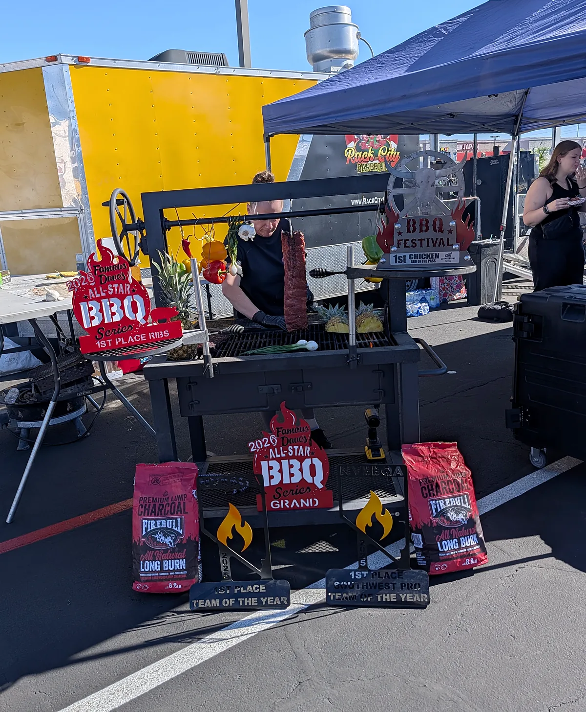
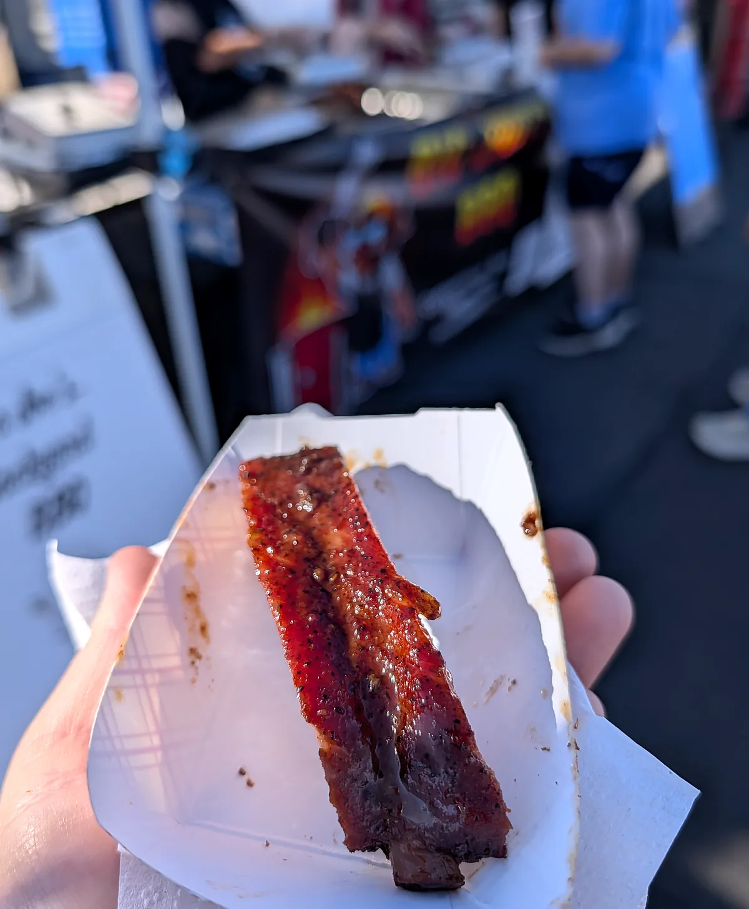
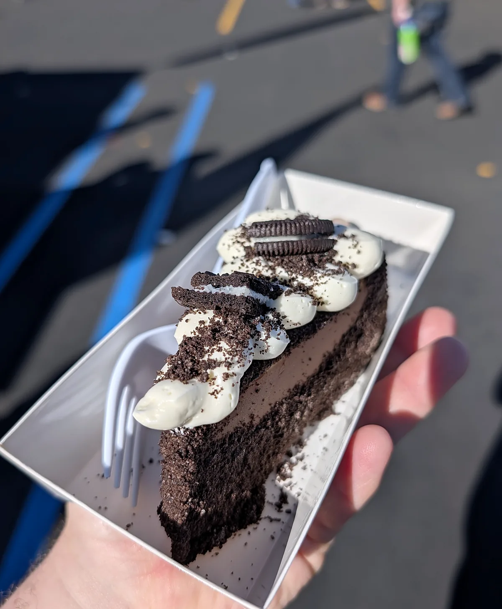
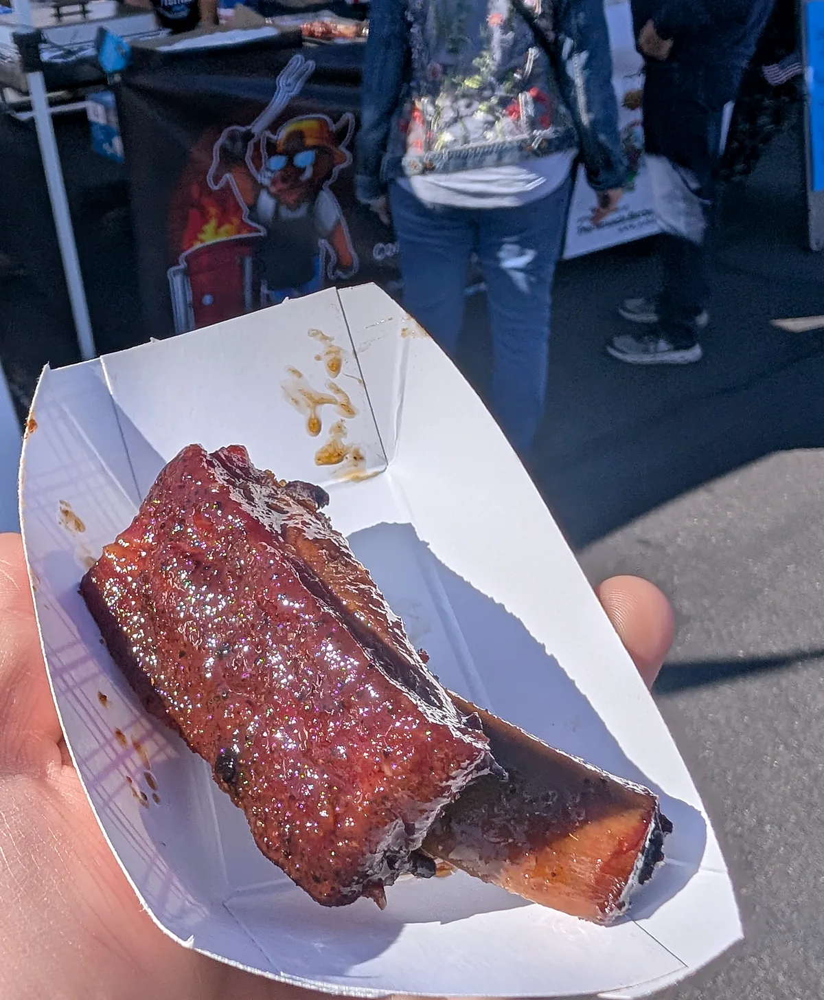
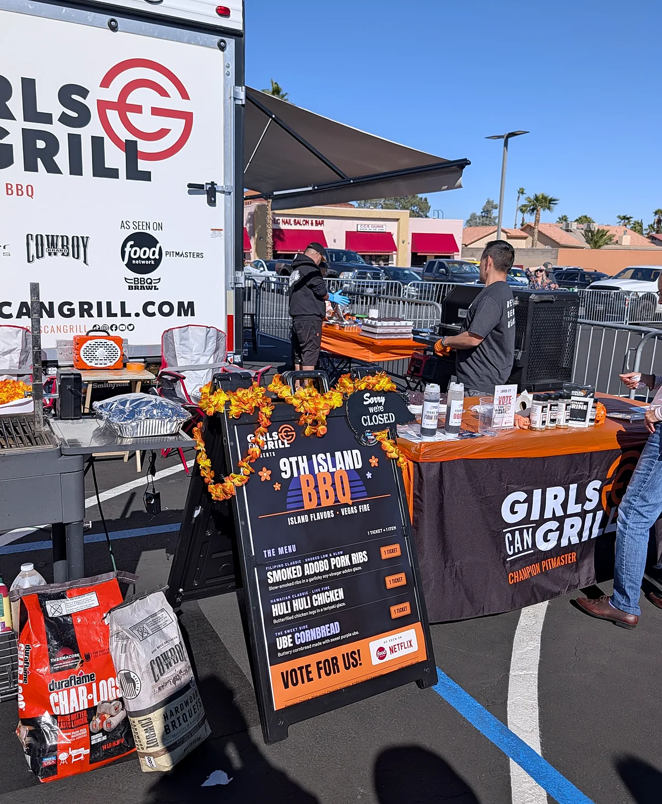
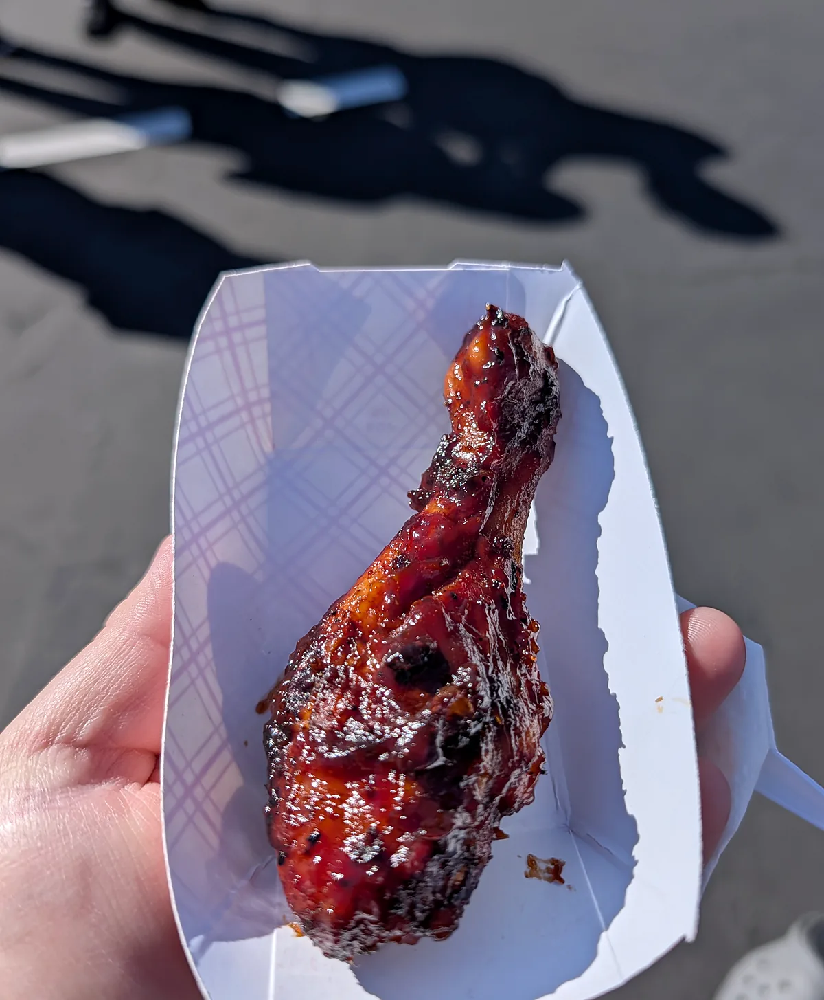
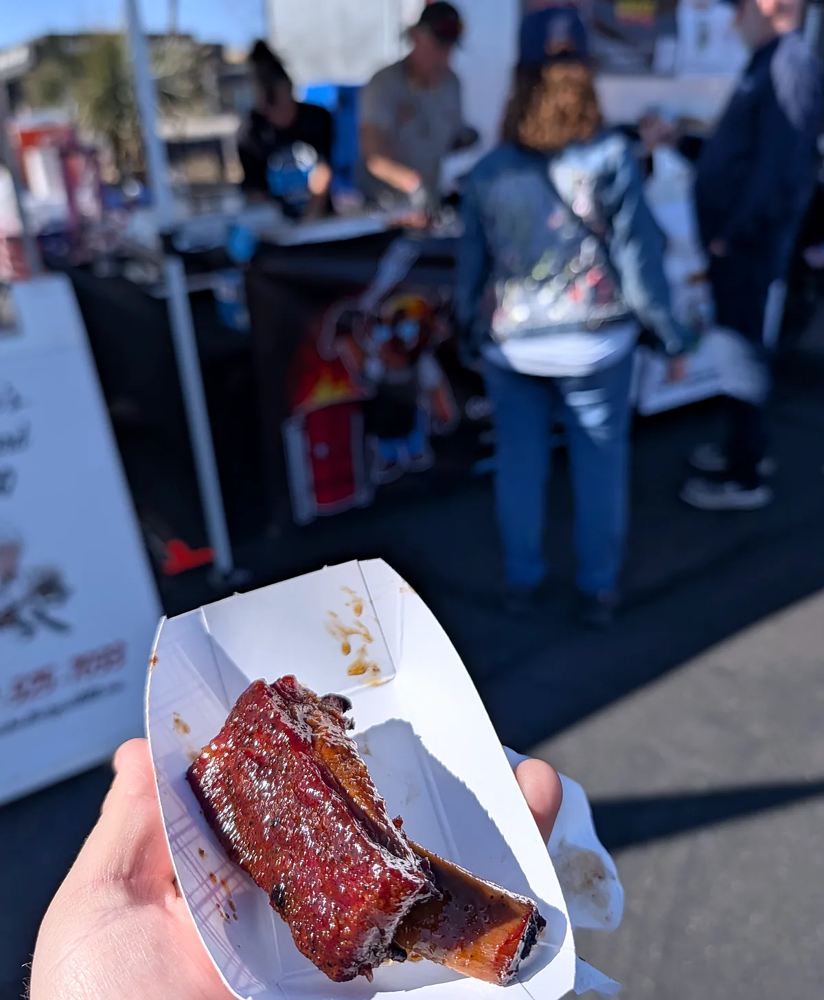
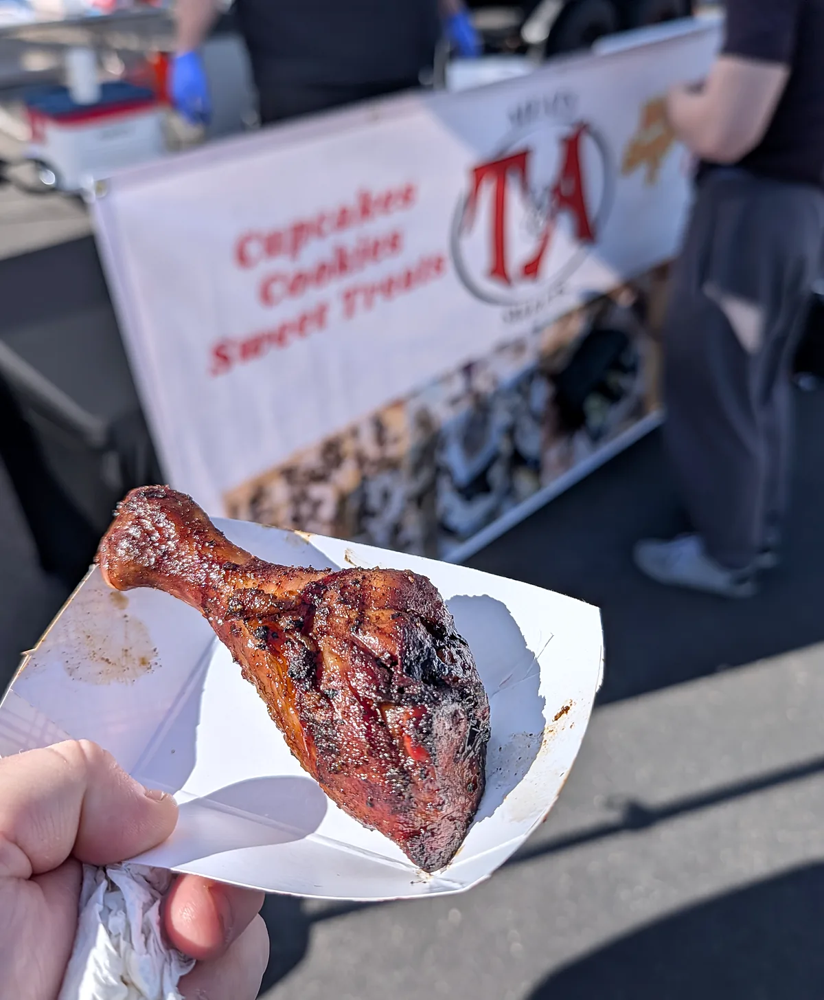
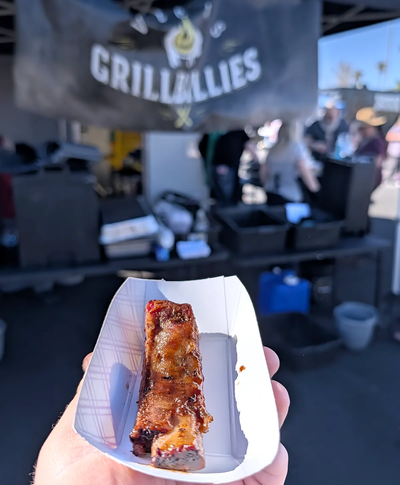
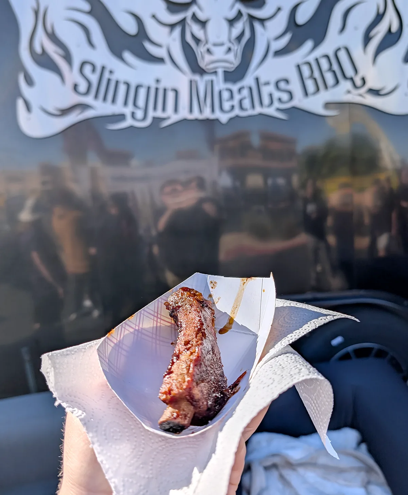

Event · Las Vegas, NV
Las Vegas BBQ Festival
Saturday, Nov 7, 2026 · Red Rock Harley-Davidson
Las Vegas BBQ Festival
Red Rock Harley-Davidson, 2260 S Rainbow Blvd, Las Vegas, NV 89146
Saturday, Nov 7, 2026
Red Rock Harley-Davidson, 2260 S Rainbow Blvd, Las Vegas, NV 89146
Saturday, Nov 7, 2026

I went to the Las Vegas BBQ Festival at Red Rock Harley-Davidson. The BBQ was super good, and I got to participate and vote for the People’s Choice winner.
Here are some of the plates and booths from the day.









Event details from the official Las Vegas BBQ Festival page.